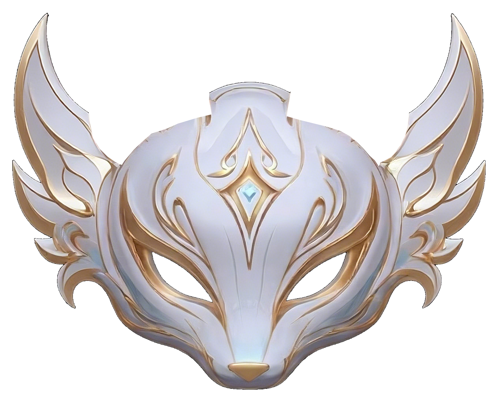
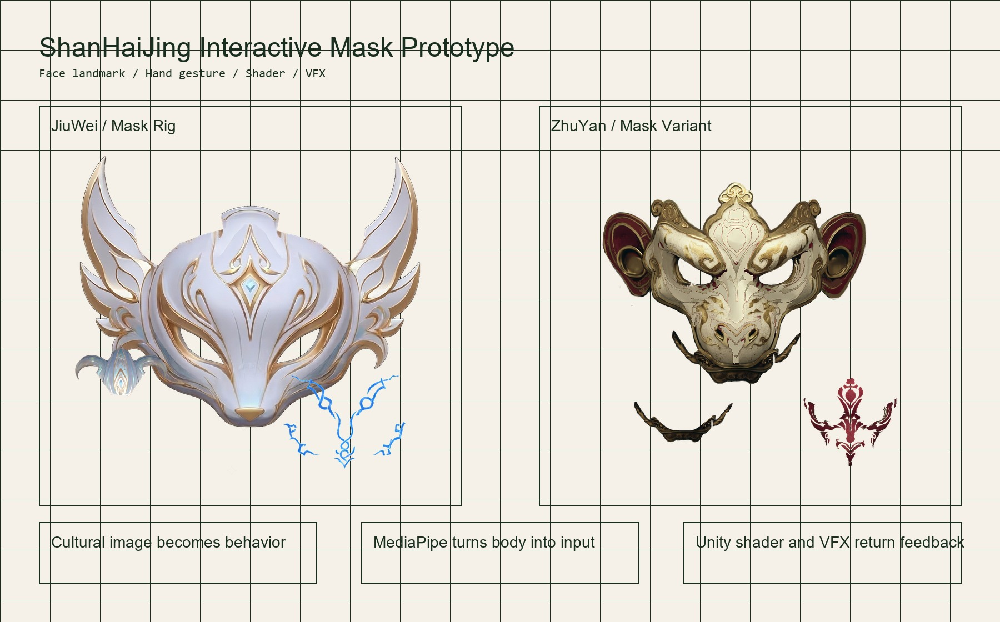
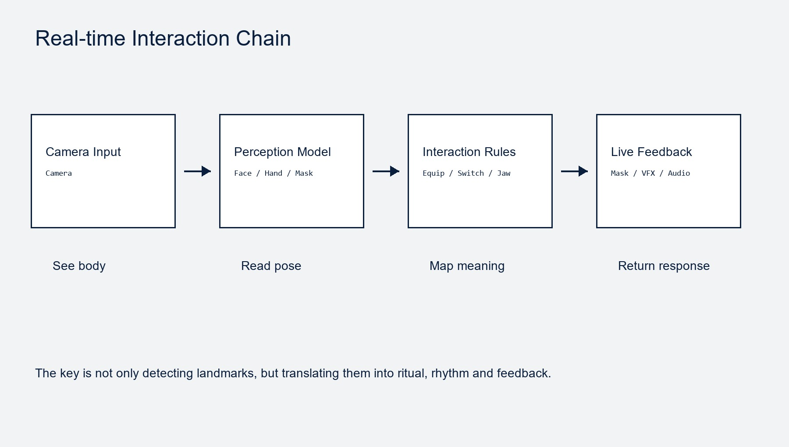

以《山海经》互动面具原型为引，讨论传统文化、游戏设计教育、AI 工具链与零基础创作之间正在形成的新关系。

这个 Unity 原型不是把《山海经》画成一张插画，而是把“面具”“异兽”“仪式感”拆成一组可感知、可响应、可切换的交互规则。

References: USC Games / NYU Game Center / CMU ETC official program descriptions
不把传统文化当作素材库，而把它当作一套可被身体进入的角色关系、仪式动作与反馈系统。
概念不是先问“画什么”，而是先问“观众怎么进入它”：是佩戴、召唤、变身，还是被角色反向凝视。
提示: 本页可用 Space / → 手动推进步骤。
MediaPipe 负责把摄像头画面变成结构化数据；Unity 负责把数据映射成世界里的物体、材质、遮挡、声音和动效。

不只是在开发阶段“帮我写代码”，也可以在运行时进入游戏，成为角色、导演、关卡生成器和玩家的对话对象。
AI 虚拟人把语音识别、LLM、语音合成、表情与动作驱动接起来。它不只是 NPC，更像一个可被引导的现场演员。
References: NVIDIA ACE / Fortnite AI-powered Conversations official materials
答案不是“先学完编程”，而是先用 AI IDE 把一个小玩法跑起来，再围绕体验不断剪枝、修复、替换和扩展。
这档适合电脑里有 Cursor 或 Trae、愿意处理一点点前端依赖的同学。目标是用 MediaPipe 手势或人脸点位控制游戏元素。
它是一套游戏开发工作流模板：Claude Code 可直接用 slash commands；Codex / OpenClaw 可把它当作项目模板和流程参考。
真正重要的仍然是：你想让人做什么、感到什么、记住什么。